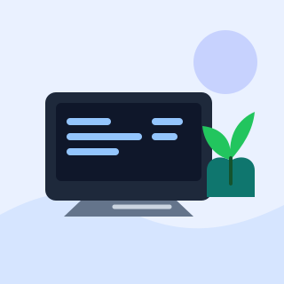

About
문제를 작게 나누고, 화면에서 확인합니다.
이 포트폴리오는 프레임워크 없이 DOM 이벤트, 상태 변경, 렌더링을 연결하는 연습을 위해 만들었습니다. 사용자가 누르는 버튼과 입력하는 값이 어떤 화면 변화로 이어지는지 코드와 UI에서 함께 확인할 수 있습니다.
- 관심
- 웹 접근성 · 인터랙션
- 방식
- 작은 상태부터 명확히 렌더링
- 도구
- Vanilla JavaScript

About
이 포트폴리오는 프레임워크 없이 DOM 이벤트, 상태 변경, 렌더링을 연결하는 연습을 위해 만들었습니다. 사용자가 누르는 버튼과 입력하는 값이 어떤 화면 변화로 이어지는지 코드와 UI에서 함께 확인할 수 있습니다.
Skills
Projects
GitHub API에서 공개 저장소를 불러와 카드로 보여 줍니다. 페이지를 열면 기본 계정을 자동으로 불러오고, 다른 사용자명을 입력해 결과를 바꿔 볼 수 있습니다. 인증 없이 호출해 시간당 60회 제한이 있으니 반복 새로고침은 피해 주세요.
Contact
이 폼은 유효성 검사 흐름을 보여 주는 학습용 UI입니다. 실제로 메시지를 전송하지 않으며, 유효한 입력은 화면 안에서만 성공 상태로 표시합니다.